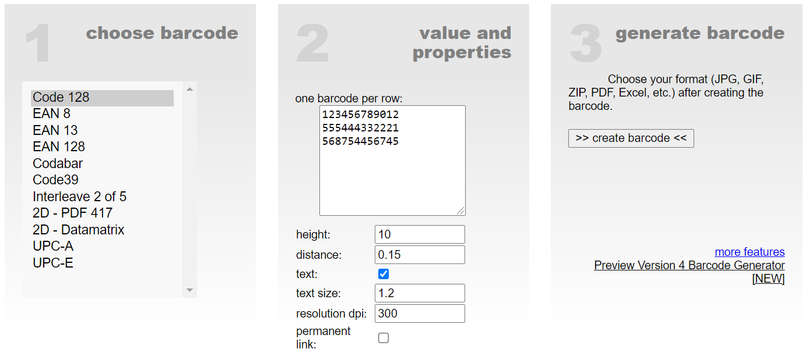

Online Barcode Generator
Create your own barcodes. You can print or save as JPG, GIF, ZIP or PDF. Your barcode is free of charge and quickly generated. It´s easy.

Create your own barcodes. You can print or save as JPG, GIF, ZIP or PDF. Your barcode is free of charge and quickly generated. It´s easy.
Remove backgrounds 100% automatically in 5 seconds with zero clicks There are approximately 20 million more interesting activities than removing backgrounds by hand. Thanks to remove.bg's clever AI, you can slash editing time - and have more fun!.
diagrams.net is an open source technology stack for building diagramming applications, and the world’s most widely used browser-based end-user diagramming software.
provide free, high quality diagramming software for everyone
CloudConvert is an online file converter. We support nearly all audio, video, document, ebook, archive, image, spreadsheet, and presentation formats. To get started, use the button below and select files to convert from your computer.
Every tool you need to work with PDFs in one place Every tool you need to use PDFs, at your fingertips. All are 100% FREE and easy to use! Merge, split, compress, convert, rotate, unlock and watermark PDFs with just a few clicks.
beautifytools is free online tools that I have been using for a while. I've found those useful and I hope that other users and developers find those useful too. Thanks for visiting Beautify Tools.
PearOCR, an online web version of the character recognition tool, is completely free. Compared with many similar tools, the free version limits the recognition times, image file size, etc., and there are no restrictions on the use of pearocr. You don't need to register and log in, and you don't need to download and install any apps. On any operating system of any device, it can be used only by using the browser, which is super convenient.

© 2021 WebOnlineTools. All rights reserved.